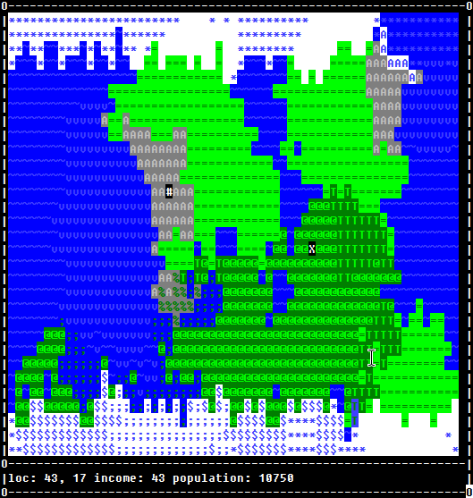

I believe this project represents roughly when I actually started to take on programming as a hobby. There's a few things that I had made before this, of course, but usually those things either ran into difficulties that considerably discouraged me or were so small that it didn't really count.
For a little while before this project I would search forums about how to learn programming. People would post questions like "What programming language should I start with?" and all the responses would say JavaScript or Python, with the caveat that they could maybe do C# or Java if they were really serious. Occasionally someone would say they wanted to start with C++, which would universally be met with "NO! DON'T DO THAT! ANYTHING BUT C++!"
So, naturally, I avoided C++, because I was a "beginner".
A lot of my projects before this time (of which I have very few because I lost that data), I would come out of super frustrated and confused. The languages listed above all try to abstract things away, but those abstractions are unfortunately leaky so everything I made would become a buggy mess.
Eventually, after a lot of this frustration, I figured '**** that advice, I'm learning C++ anyways', and followed whatever tutorial I found online ( This one if you're curious. It's been updated quite a bit, so I don't know what it's like now, but at the time it was actually quite informative). Everything made so much more sense because the language never tried to abstract away what the computer was actually doing.
After doing enough of that tutorial to feel comfortable with C++, I made this little game.
My idea was that it would be kind of like Sid Meier's Civilization but with an interface more like Dwarf Fortress to make the development easier. Of course, the game is largely incomplete and not very fun. The world gen is a bit more interesting though.
Game Link